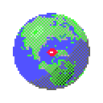

Solaris 8 — CDE
Sun Microsystems · 2000
Solaris 8 (SunOS 5.8, February 2000) ran on the workstations and servers that kept the dot-com web running. Its desktop was CDE, the Common Desktop Environment that HP, IBM, Novell and Sun agreed on as the shared Unix desktop.
At the bottom sat the Front Panel: a clock, a calendar, the File Manager, a text editor, mail, four workspaces called One to Four, printers, a cpu and disk meter, help and the trash. Every control had a little arrow above it that opened a subpanel with more.
What made it special
- The Front Panel with its pop-up subpanels.
- Four workspaces, long before macOS had Spaces.
- The mauve and grey dtwm window frames.
- The tiled Solaris sun on a purple desktop.
In RetroMac
- The Front Panel is measured off Solaris 8 screenshots, pixel for pixel; the clock, the date and the cpu/disk meter are live.
- Every control opens a real Mac app, folder or setting; hold the pointer over it to see which. Drop an app on Install Icon in a subpanel to add your own.
- The workspaces open Mission Control, and Exit turns the theme off.
ⓘ Did you know…
Open source at last. CDE was released as open source in 2012, long after its Unix days.
Workspaces by name. CDE's four workspaces were called One, Two, Three and Four, and you could rename them.
Lock, not log out. The padlock on the Front Panel locked the display with a screen saver running.